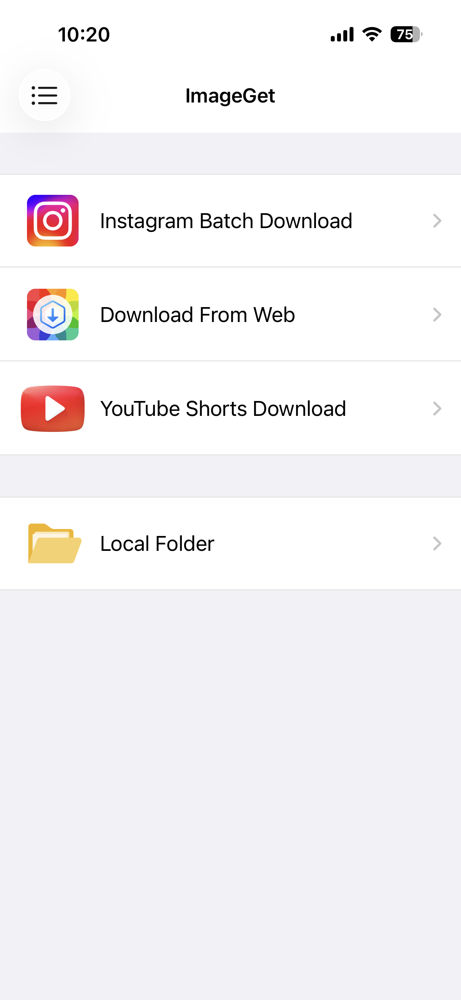
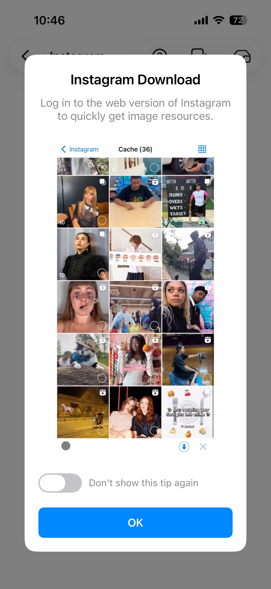
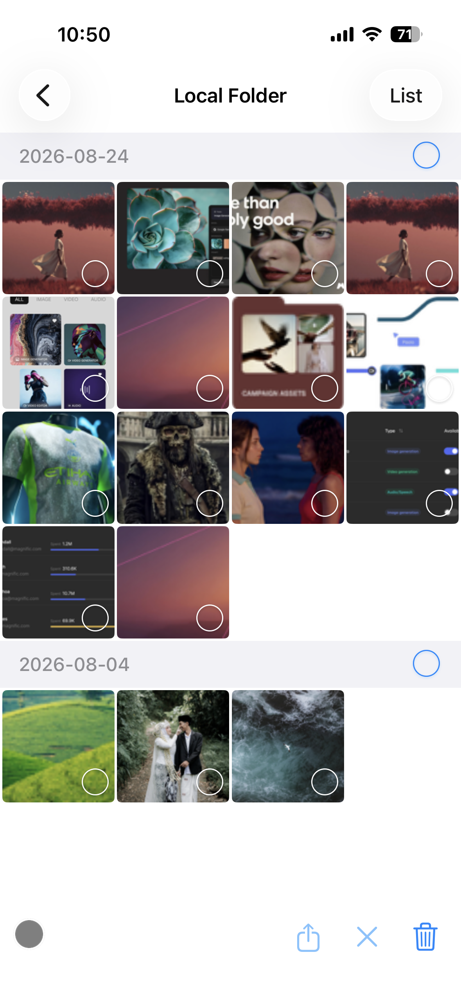

Enregistrer les photos, Reels et vidéos Instagram
Enregistrer des photos et des vidéos Instagram dans sa pellicule signifiait autrefois passer par des captures d'écran : perte de qualité, interface dans le cadre et filigranes dans un coin. ImageGet change la donne. Connectez-vous avec votre compte Instagram et naviguez comme d'habitude — ImageGet met automatiquement en cache chaque photo, chaque Reel et chaque vidéo que vous voyez, puis vous choisissez ce que vous voulez télécharger. Voici comment enregistrer les photos, Reels et vidéos Instagram, étape par étape.
Téléchargez ImageGet gratuitement — enregistrez les photos, Reels et vidéos Instagram en un geste.
Télécharger ImageGetÉtape 1 : connectez-vous à votre compte Instagram
Ouvrez ImageGet et touchez l'onglet Instagram. Connectez-vous avec votre compte Instagram : l'app vous relie en toute sécurité à votre fil, vos profils et vos pages Explorer, directement dans ImageGet. Une fois connecté, vous pouvez parcourir les publications, les profils et les pages Explorer exactement comme dans l'app officielle. Aucun lien à copier-coller pour le contenu Instagram : tout ce que vous suivez et tout ce que vous recherchez est là, prêt à être enregistré.

Étape 2 : naviguez — les photos, Reels et vidéos sont mis en cache automatiquement
Une fois connecté, parcourez Instagram comme d'habitude. Pendant que vous faites défiler votre fil, vos profils et les pages Explorer, ImageGet met automatiquement en cache chaque photo, chaque Reel et chaque vidéo rencontrés, discrètement en arrière-plan. Rien à toucher et aucun lien à copier : tout ce que vous voyez est collecté au fil de votre navigation.

Étape 3 : sélectionnez et téléchargez
Quand vous avez terminé, ouvrez le cache pour passer en revue tout ce qu'ImageGet a collecté. Choisissez les photos, Reels et vidéos que vous voulez garder, puis téléchargez-les dans votre photothèque en un geste. Les photos sont enregistrées en pleine résolution et les Reels en vidéo avec le son — sans compression, sans filigrane. Activez le filtrage intelligent pour ignorer les vignettes de faible qualité et ne garder que les images haute résolution.

Astuces pour enregistrer depuis Instagram
- Enregistrer tout un profil en lot — récupérez toutes les photos et vidéos d'un compte en une seule fois. Idéal pour sauvegarder l'intégralité du fil d'un photographe ou d'un artiste.
- Utilisez le filtrage intelligent — ignorez les vignettes basse résolution, les avatars et les icônes, et ne gardez que les images de qualité que vous voulez vraiment.
- Respectez le droit d'auteur — n'enregistrez que les photos et vidéos que vous avez le droit de conserver, et créditez toujours l'auteur original lorsque vous repartagez.
FAQ
Puis-je télécharger les Reels et les vidéos Instagram ?
Oui — les Reels et les vidéos sont enregistrés dans votre photothèque avec le son, sans aucune capture d'écran.
Est-ce gratuit d'enregistrer des photos Instagram ?
Oui — la formule gratuite inclut 3 téléchargements pour les images et vidéos Instagram. Passez à Premium pour un enregistrement illimité et une expérience sans publicité.
Ai-je besoin de faire des captures d'écran ou un enregistrement d'écran ?
Non. ImageGet enregistre les photos et les Reels Instagram directement en pleine qualité — aucune capture ni enregistrement d'écran nécessaire.
L'enregistrement se fait-il en pleine qualité ?
Oui — ImageGet enregistre les photos et les Reels Instagram en pleine résolution, sans compression ni filigrane.
Voir. Enregistrer. Simple.
Téléchargez ImageGet gratuitement et enregistrez les photos, Reels et vidéos Instagram en un geste.
Télécharger ImageGet